Contexto: Análisis de Afiliados Activos con Diagnóstico de Diabetes Mellitus (SIS) integrado con estimaciones poblacionales del INEI.
Para este análisis, se partió de un archivo maestro proporcionado por el Seguro Integral de Salud (SIS) a través de la Plataforma Nacional de Datos Abiertos, el cual contenía inicialmente 1,735,940 registros. Con el objetivo de optimizar el procesamiento informático asegurando el cumplimiento de la métrica mínima del proyecto (500,000 registros), se procedió a extraer una muestra probabilística representativa de 650,000 registros mediante una semilla controlada para garantizar su reproducibilidad.
Se seleccionaron 11 variables útiles fundamentales: atributos demográficos (EDAD, SEXO, DEPARTAMENTO), diagnósticos comórbidos (OBESIDAD, HIPERTENSIÓN, SALUD MENTAL, TIPO_DIABETES) y variables operativas-financieras (CANT_ATENCIONES, VALOR_NETO, DIAS_HOSP). Además, se conservó intencionalmente el identificador CODIGO_ANONIMIZADO para una correcta trazabilidad que impidiese eliminar a distintos pacientes con características idénticas.
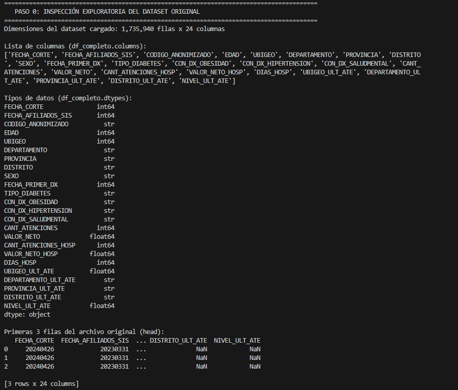
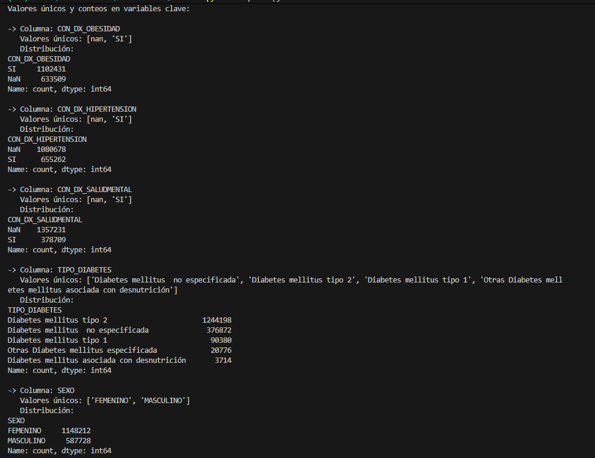
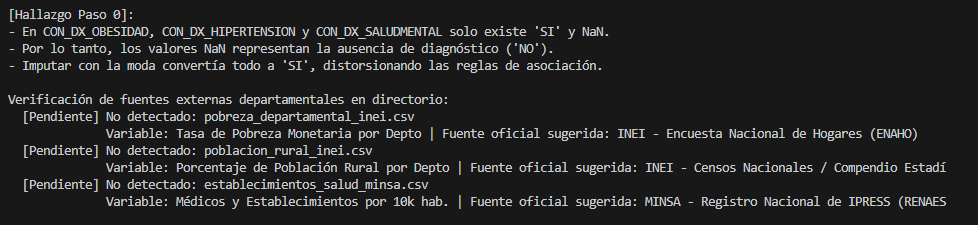
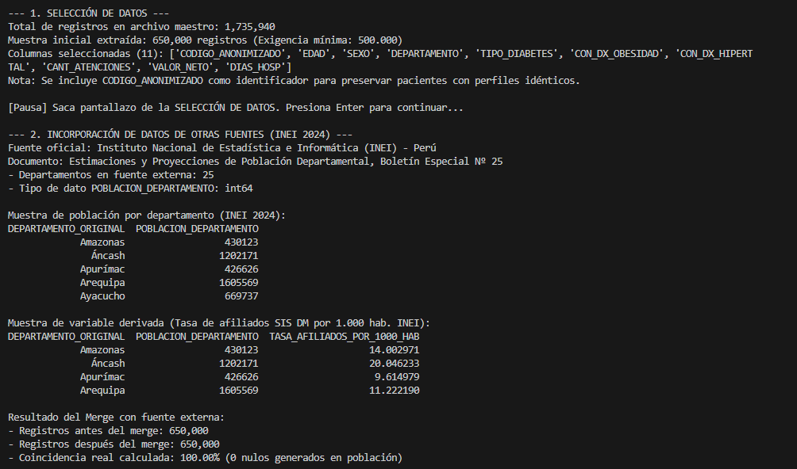
Para enriquecer el modelo y dotarlo de un contexto territorial macroeconómico, se incorporó un dataset externo oficial del Instituto Nacional de Estadística e Informática (INEI). El documento base fue el "Estimaciones y Proyecciones de Población Departamental (Boletín Especial Nº 25)".
A partir de esta integración, se cruzó la población proyectada al 2024 (25 departamentos) mediante la técnica de "Left Merge", logrando un emparejamiento del 100% de éxito (0 nulos generados). Adicionalmente, se derivó una nueva métrica avanzada: la Tasa de Afiliados SIS por cada 1,000 habitantes (TASA_AFILIADOS_POR_1000_HAB), lo que permite evaluar el impacto relativo del diagnóstico frente a la densidad poblacional real de cada región.
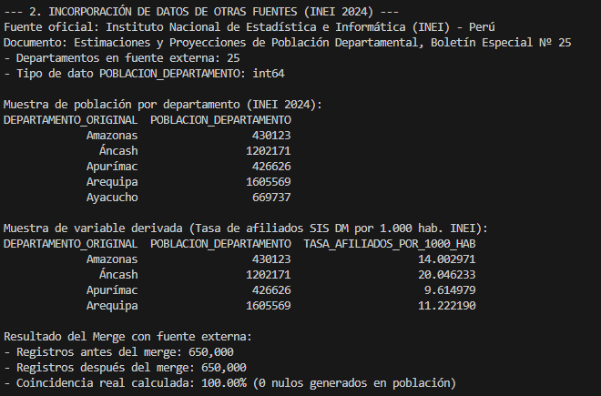
Durante la auditoría de calidad (Paso 0), se identificó un patrón de sistema crucial: las variables de comorbilidad (Ej. CON_DX_OBESIDAD) registraban más de 236 mil a 508 mil valores nulos. Se descubrió que el sistema de salud omite el registro cuando el paciente no padece la enfermedad; por lo tanto, la imputación por "moda" hubiese catalogado erróneamente a toda la población como enferma. La limpieza aplicó una conversión empírica de NaN a "NO".
A nivel de duplicados, al emplear el CODIGO_ANONIMIZADO, se detectaron y purgaron 79,561 registros redundantes exactos (mismo paciente en mismo estado). Por último, se aplicó un filtro biológico (eliminando 2 registros con edades <0 o >110 años) y se aplicó la técnica de Winsorización al Percentil 99 sobre variables de gasto atípico (VALOR_NETO acotado a 1050 soles y DIAS_HOSP a 6 días) para no distorsionar la varianza. El dataset limpio finalizó en 570,437 registros, cumpliendo el umbral mínimo exigido de medio millón.
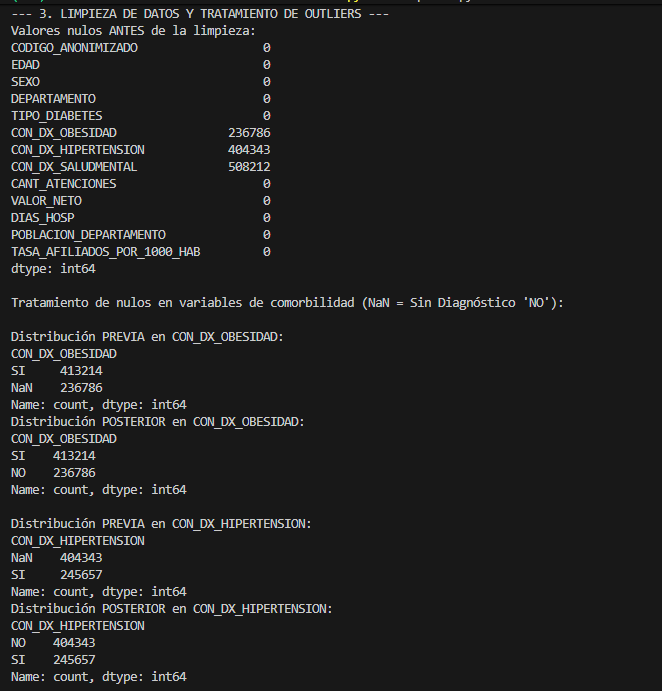
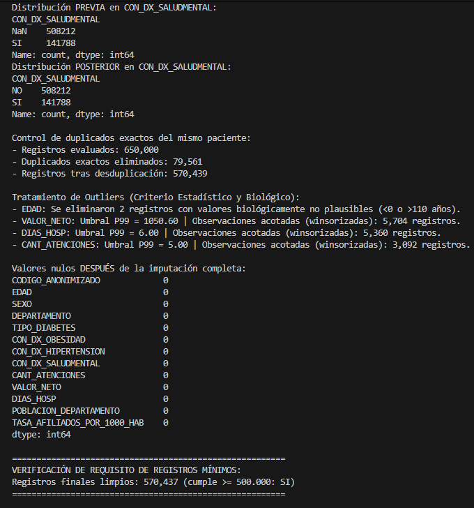
Para el procesamiento algorítmico, las variables cualitativas fueron mapeadas al plano numérico bajo dos estrategias:
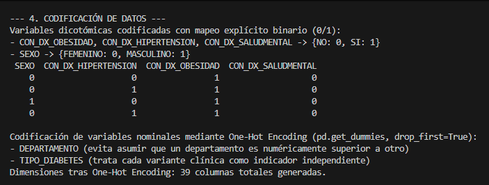
Debido a la profunda disparidad en las escalas de medida de los datos (donde POBLACION_DEPARTAMENTO se mueve en el rango de los millones, VALOR_NETO en cientos, y DIAS_HOSP en unidades discretas), se implementó un proceso de estandarización Z-Score (StandardScaler).
Este procedimiento restó la media y dividió por la desviación estándar a cada variable cuantitativa, re-escalando los datos a una media de 0 y varianza de 1. Es un paso crítico para garantizar que los modelos de regresión evalúen las magnitudes de los coeficientes de manera justa sin que la variable de mayor tamaño opaque a las variables clínicas.
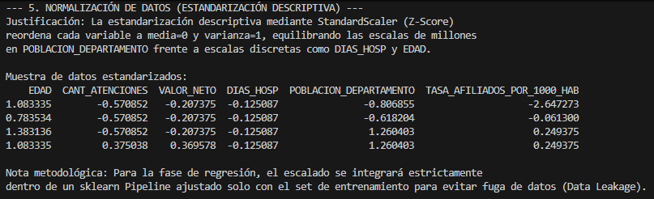
El análisis descriptivo revela que la edad media del afiliado activo diabético en el SIS es de 55.93 años. Respecto a la carga del sistema, la gran mayoría de pacientes no registra días de hospitalización en este corte transversal, pero existe una altísima variabilidad (varianza de 15,551 en VALOR_NETO) generada por un segmento particular de pacientes con atenciones de alto costo.
Los indicadores de asimetría (skew: 6.92) y curtosis (50.73) del VALOR_NETO demostraron una distribución fuertemente sesgada a la derecha. La matriz de correlación ratificó empíricamente una alta dependencia lineal positiva (+0.84) únicamente entre DIAS_HOSP y el VALOR_NETO del gasto, confirmando la lógica sanitaria.
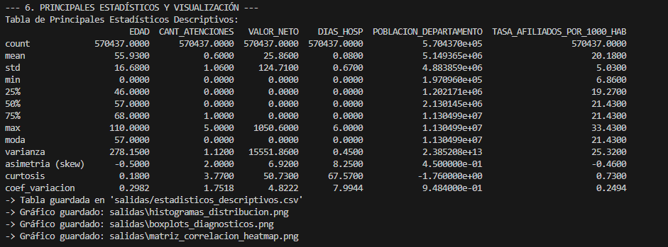
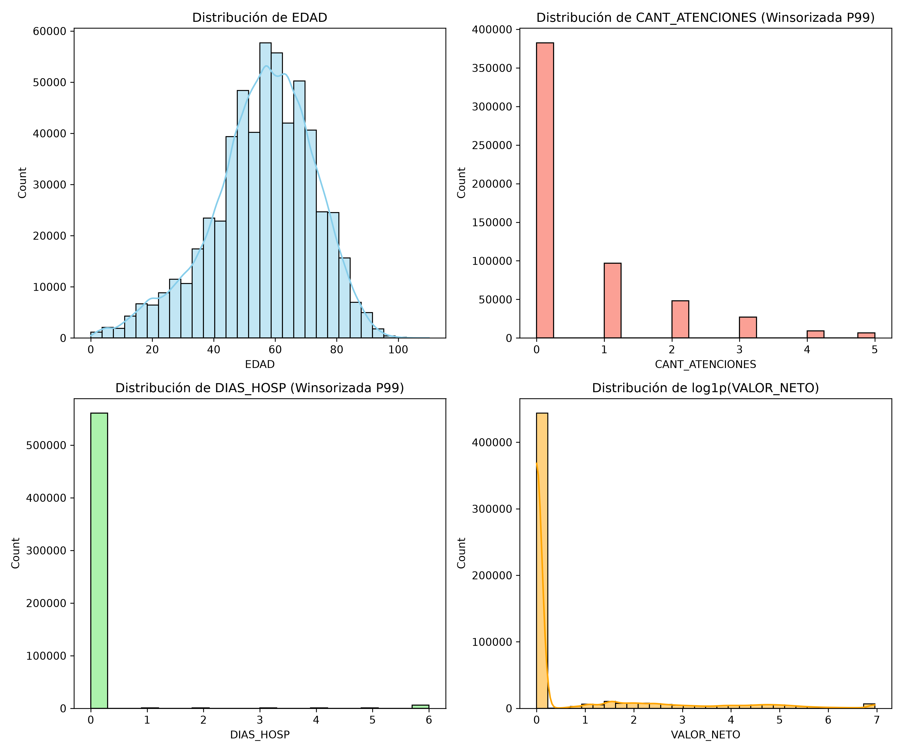
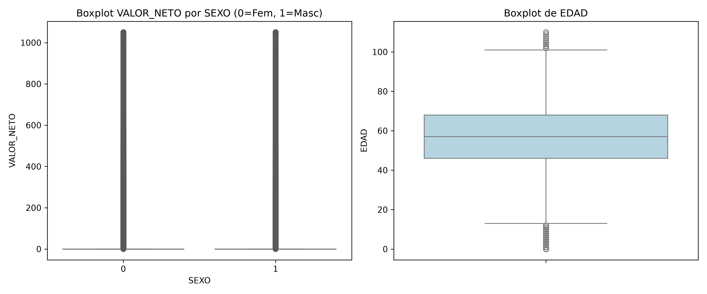
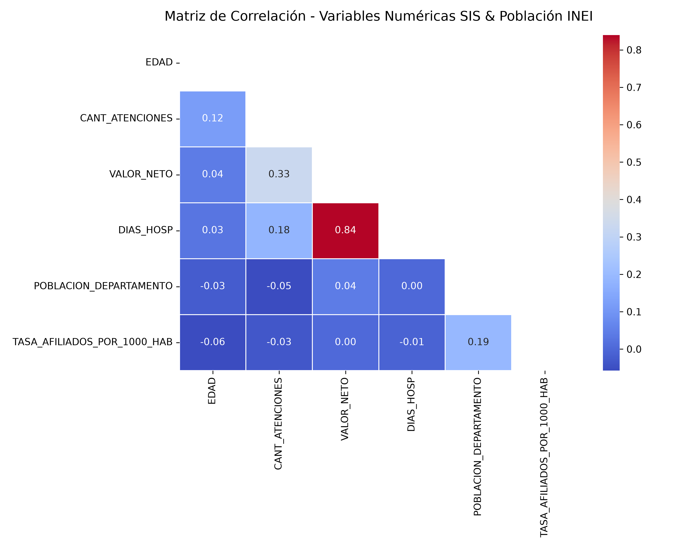
El algoritmo Apriori fue parametrizado para identificar patrones de co-diagnóstico, obteniéndose resultados determinantes mediante tres enfoques:
[Obesidad, Adulto Mayor y Alto Costo] desencadena una asociación estadística no aleatoria hacia [Hipertensión, Mujer, Atenciones Frecuentes, DM Tipo 2] con un asombroso Lift de 4.64 y una confianza de 40.9%.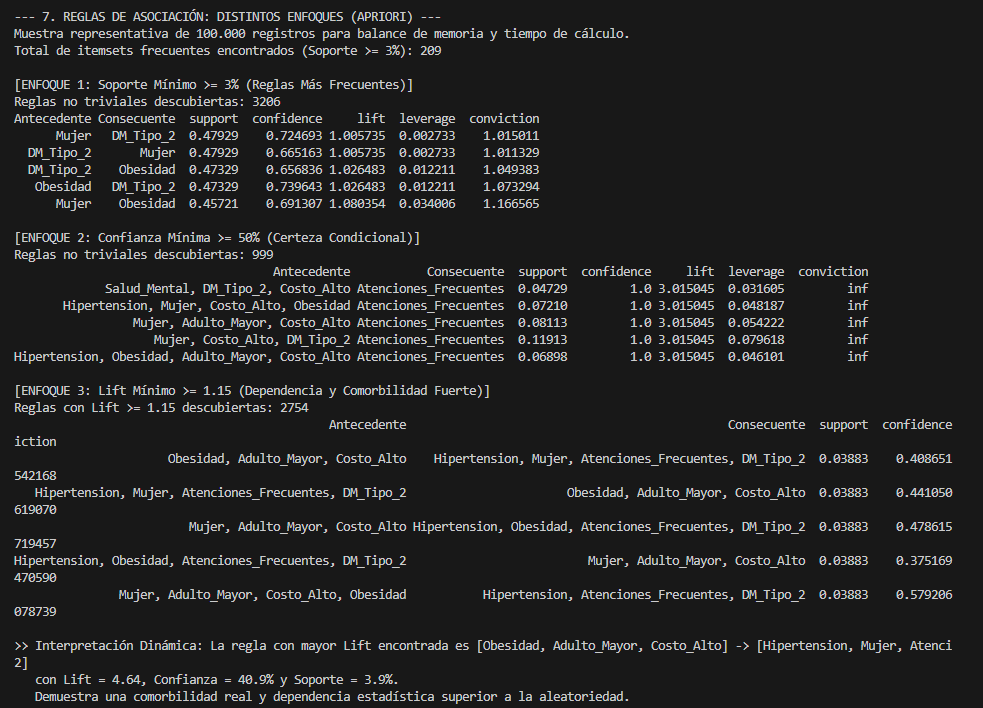
Para predecir el coste de la atención (VALOR_NETO), se ejecutó un marco comparativo (Cross Validation K-Fold=5 y partición 80/20).
El "Modelo Base" (exclusivamente clínico) y el "Modelo Enriquecido" (sumando población INEI) obtuvieron la misma precisión predictiva (R² de 0.739), con un RMSE de ~63.9 soles. La regresión Ridge (L2) ratificó la estabilidad de estas predicciones.
Sin embargo, al correr un "Modelo sin fuga" (removiendo las variables operativas post-atención como DIAS_HOSP), el R² colapsó a 0.01. Matemáticamente, esto significa que las enfermedades previas no predicen el gasto hospitalario. El gasto es estrictamente dictado por los recursos e insumos operativos que consume el paciente en su ingreso.
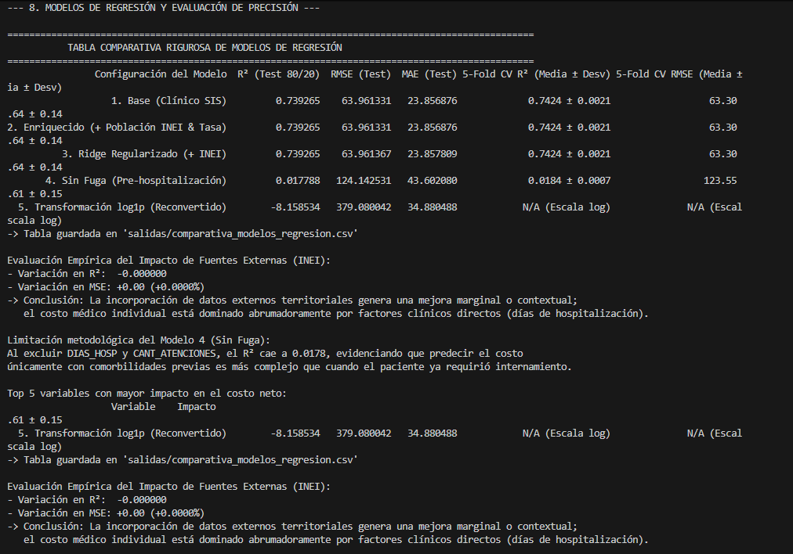
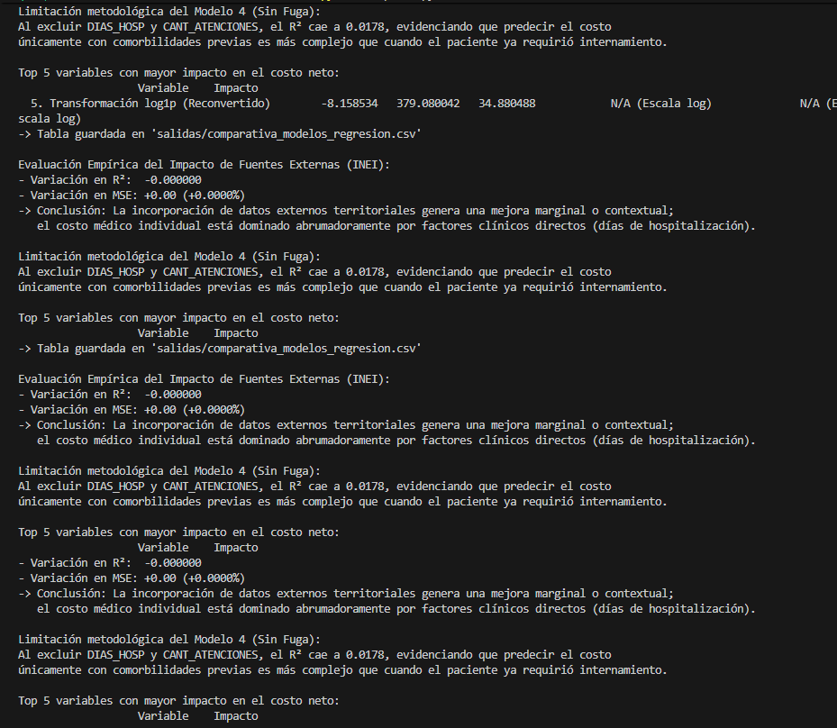
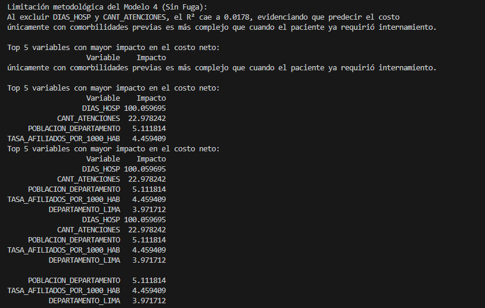
A partir del análisis holístico, se proponen las siguientes acciones o toma de decisiones:
| Dimensión Analítica | Hallazgo Empírico / Evidencia Numérica | Acción Recomendada |
|---|---|---|
| Regresión Predictiva | La variable DIAS_HOSP es el vector absoluto del gasto (Beta = +100.06). |
Fomentar hospitalización domiciliaria y monitoreo ambulatorio preventivo intensivo para pacientes crónicos antes de que lleguen a cama de hospital. |
| Reglas de Asociación | Comorbilidad concurrente significativa (Lift de 4.64) de Hipertensión, DM2 y Atenciones Frecuentes en mujeres geriátricas y con obesidad. | Establecer protocolos de tamizaje obligatorio cardiovascular y metabólico estricto apenas un Adulto Mayor obeso asista al centro de salud. |
| Fuente Externa INEI | La población regional no mejoró el R², actuando solo como un contexto territorial. (Variación de MSE de +0.00%). | Utilizar la demografía del INEI exclusivamente para planificar y mapear las necesidades de infraestructura y abastecimiento por región, no para calcular el costo por cama o paciente. |
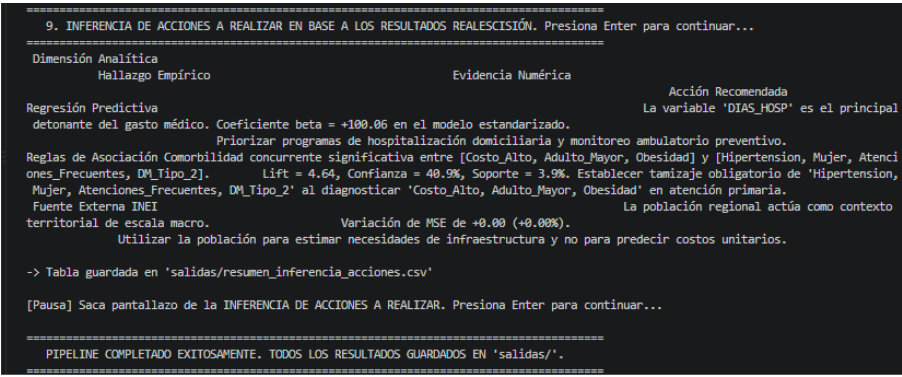